20. Securización del servicio web de acceso a la base de datos [dbproduitscategories]
20.1. Configuración del entorno de trabajo
Implementaremos la seguridad del servicio web con los siguientes proyectos:
 |
- los proyectos [spring-security-*] se encontrarán en la carpeta [<exemples>\spring-database-generic\spring-security];
- se implementará la seguridad para SGBD y MySQL con una capa [DAO / JDBC] y, a continuación, una capa [DAO / JPA / Hibernate];
- pulse Alt-F5 y, a continuación, regenere todos los proyectos Maven;
Necesitamos crear usuarios en la base de datos [dbproduitscategories]. Para ello, utilice la configuración de ejecución [spring-security-create-users-hibernate-eclipselink]:
 |  |
La ejecución de esta configuración rellena las tablas [USERS, ROLES, USERS_ROLES] de la tabla [dbproduitscategories]:
 |
 |
Los identificadores creados [login/passwd] son los siguientes: [admin/admin], [user/user], [guest/guest]. En la base de datos, las contraseñas están cifradas.
 |

Una vez hecho esto, ejecute la configuración de ejecución denominada [spring-security-server-jpa-generic-hibernate-eclipselink], que inicia el servicio web seguro (MySQL debe estar en ejecución):
 |  |
A continuación, ejecute la configuración de ejecución denominada [spring-security-client-generic-JUnitTestDao], que comprueba el servicio web seguro:
 |  |
La prueba debe completarse con éxito.
20.2. El proyecto Eclipse [spring-security-server-jdbc-generic]
El servicio web seguro se implementa mediante el proyecto [spring-security-server-jdbc-generic]:
 |
Arriba:
- la capa [DAO1] es la capa [DAO] que gestiona las tablas [PRODUITS] y [CATEGORIES] de la base de datos [dbproduitscategories]. Ya se ha escrito;
- la capa [DAO2] es la capa [DAO] que gestiona las tablas [USERS], [ROLES] y [USERS_ROLES] de la base [dbproduitscategories]. Queda por escribir;
 |
20.2.1. La configuración de Maven
El proyecto [spring-security-server-jdbc-generic] es un proyecto Maven configurado por el siguiente archivo [pom.xml]:
<project xmlns="http://maven.apache.org/POM/4.0.0" xmlns:xsi="http://www.w3.org/2001/XMLSchema-instance"
xsi:schemaLocation="http://maven.apache.org/POM/4.0.0 http://maven.apache.org/xsd/maven-4.0.0.xsd">
<modelVersion>4.0.0</modelVersion>
<groupId>dvp.spring.database</groupId>
<artifactId>spring-security-server-jdbc-generic</artifactId>
<version>0.0.1-SNAPSHOT</version>
<name>spring-security-server-jdbc-generic</name>
<description>démo spring security</description>
<properties>
<project.build.sourceEncoding>UTF-8</project.build.sourceEncoding>
<java.version>1.7</java.version>
</properties>
<parent>
<groupId>org.springframework.boot</groupId>
<artifactId>spring-boot-starter-parent</artifactId>
<version>1.2.3.RELEASE</version>
</parent>
<dependencies>
<!-- Spring Security -->
<dependency>
<groupId>org.springframework.boot</groupId>
<artifactId>spring-boot-starter-security</artifactId>
</dependency>
<!-- servidor web / jSON -->
<dependency>
<groupId>dvp.spring.database</groupId>
<artifactId>spring-webjson-server-jdbc-generic</artifactId>
<version>0.0.1-SNAPSHOT</version>
</dependency>
</dependencies>
<!-- complementos -->
<build>
<plugins>
<plugin>
<groupId>org.apache.maven.plugins</groupId>
<artifactId>maven-surefire-plugin</artifactId>
<version>2.18.1</version>
</plugin>
</plugins>
</build>
</project>
- líneas 29-33: se retoma lo existente con el archivo del servicio web / json / jdbc estudiado;
- líneas 24-27: la dependencia que incorpora las clases de Spring Security;
Al final, el proyecto presenta las siguientes dependencias con respecto a los demás proyectos cargados en Eclipse:
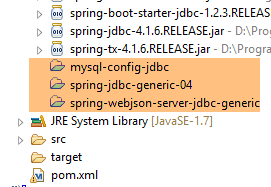 |
20.2.2. La capa [DAO2]
 |
Arriba:
- La capa [DAO1] es la capa [DAO] que gestiona las tablas [PRODUITS] y [CATEGORIES] de la base de datos [dbproduitscategories]. Ya se ha escrito;
- la capa [DAO2] es la capa [DAO] que gestiona las tablas [USERS], [ROLES] y [USERS_ROLES] de la base [dbproduitscategories]. Es la que vamos a escribir ahora;
 |
Spring Security exige la creación de una clase que implemente la siguiente interfaz [UsersDetail]:
 |
Esta interfaz se implementa aquí mediante la clase [AppUserDetails]:
package spring.security.dao;
import generic.jdbc.config.ConfigJdbc;
import java.sql.ResultSet;
import java.sql.SQLException;
import java.util.ArrayList;
import java.util.Collection;
import java.util.Collections;
import java.util.List;
import org.springframework.jdbc.core.RowMapper;
import org.springframework.jdbc.core.namedparam.NamedParameterJdbcTemplate;
import org.springframework.security.core.GrantedAuthority;
import org.springframework.security.core.authority.SimpleGrantedAuthority;
import org.springframework.security.core.userdetails.UserDetails;
import spring.jdbc.entities.Role;
import spring.jdbc.entities.User;
import spring.jdbc.infrastructure.DaoException;
public class AppUserDetails implements UserDetails {
private static final long serialVersionUID = 1L;
// JdbcTemplate
private NamedParameterJdbcTemplate namedParameterJdbcTemplate;
// propiedades
private User user;
private String simpleClassName = getClass().getSimpleName();
// constructores
public AppUserDetails() {
}
public AppUserDetails(User user, NamedParameterJdbcTemplate namedParameterJdbcTemplate) {
this.user = user;
this.namedParameterJdbcTemplate = namedParameterJdbcTemplate;
}
// -------------------------interfaz
@Override
public Collection<? extends GrantedAuthority> getAuthorities() {
Collection<GrantedAuthority> authorities = new ArrayList<>();
for (Role role : getRoles(user.getId())) {
authorities.add(new SimpleGrantedAuthority(role.getName()));
}
return authorities;
}
...
// métodos privados----------------
private List<Role> getRoles(Long id) {
try {
// se busca al usuario a través de su id
return namedParameterJdbcTemplate.query(ConfigJdbc.SELECT_ROLES_BYUSERID, Collections.singletonMap("id", id), new ShortRoleMapper());
} catch (Exception e) {
//e.printStackTrace();
throw new DaoException(167, e, simpleClassName);
}
}
}
// --------------------- mappers
class ShortRoleMapper implements RowMapper<Role> {
@Override
public Role mapRow(ResultSet rs, int rowNum) throws SQLException {
return new Role(rs.getLong("r_ID"), rs.getLong("r_VERSIONING"), rs.getString("r_NAME"));
}
}
- línea 22: la clase [AppUserDetails] implementa la interfaz [UserDetails];
- líneas 29-30: la clase encapsula un usuario (línea 19) y el repositorio que permite obtener los detalles de dicho usuario (línea 20);
- línea 27: se accederá a la base de datos a través de JDBC mediante el objeto [NamedParameterJdbcTemplate namedParameterJdbcTemplate] definido en el proyecto [spring-jdbc-generic-04]. Cabe señalar que este objeto no es inyectado por Spring, como solía hacerse. Se proporciona al constructor de las líneas 36-39. ¿Por qué? Porque la clase [AppUserDetails] no es un componente de Spring (ausencia de la anotación @Component) y, por lo tanto, no se pueden realizar inyecciones en ella;
- líneas 36-39: el constructor que instancia la clase con un usuario y su repositorio;
- líneas 42-49: implementación del método [getAuthorities] de la interfaz [UserDetails]. Debe construir una colección de elementos de tipo [GrantedAuthority] o derivado. Aquí utilizamos el tipo derivado [SimpleGrantedAuthority] (línea 46) que encapsula el nombre de uno de los roles del usuario de la línea 29;
- líneas 45-47: se recorre la lista de roles del usuario de la línea 29 para construir una lista de elementos de tipo [SimpleGrantedAuthority];
- línea 45: para obtener los roles del usuario, se utiliza el método privado [getRoles] de la línea 53;
- línea 56: ejecuta la orden SQL [ConfigJdbc.SELECT_ROLES_BYUSERID] (definida en [Configjdbc]) de la siguiente manera:
public static final String SELECT_ROLES_BYUSERID = "SELECT DISTINCT r.ID as r_ID, r.VERSIONING as r_VERSIONING, r.NAME as r_NAME FROM ROLES r, USERS u, USERS_ROLES ur WHERE u.ID=:id AND ur.USER_ID=u.ID AND ur.ROLE_ID=r.ID";
Esta consulta SQL realiza una unión entre las tres tablas [USERS, ROLES, USERS_ROLES] para obtener los roles de un usuario identificado por su clave primaria. Se configura mediante la clave primaria [:id] del usuario cuyos roles se buscan.
- línea 56: cada línea resultante de [SELECT] se transforma en una entidad [Role] mediante la clase [ShortRowMapper] de las líneas 66-72;
Volvamos al código de la clase [AppUserDetails]:
package spring.security.dao;
...
public class AppUserDetails implements UserDetails {
private static final long serialVersionUID = 1L;
// JdbcTemplate
private NamedParameterJdbcTemplate namedParameterJdbcTemplate;
// propiedades
private User user;
private String simpleClassName = getClass().getSimpleName();
// constructores
public AppUserDetails() {
}
public AppUserDetails(User user, NamedParameterJdbcTemplate namedParameterJdbcTemplate) {
this.user = user;
this.namedParameterJdbcTemplate = namedParameterJdbcTemplate;
}
// -------------------------interfaz
@Override
public Collection<? extends GrantedAuthority> getAuthorities() {
Collection<GrantedAuthority> authorities = new ArrayList<>();
for (Role role : getRoles(user.getId())) {
authorities.add(new SimpleGrantedAuthority(role.getName()));
}
return authorities;
}
@Override
public String getPassword() {
return user.getPassword();
}
@Override
public String getUsername() {
return user.getLogin();
}
@Override
public boolean isAccountNonExpired() {
return true;
}
@Override
public boolean isAccountNonLocked() {
return true;
}
@Override
public boolean isCredentialsNonExpired() {
return true;
}
@Override
public boolean isEnabled() {
return true;
}
// getters y setters
...
}
- líneas 35-37: implementan el método [getPassword] de la interfaz [UserDetails]. Se devuelve la contraseña del usuario de la línea 12;
- líneas 39-42: implementan el método [getUserName] de la interfaz [UserDetails]. Se devuelve el nombre de usuario de la línea 12;
- líneas 44-47: la cuenta del usuario nunca caduca;
- líneas 49-52: la cuenta del usuario nunca se bloquea;
- líneas 54-57: las credenciales del usuario nunca caducan;
- líneas 59-62: la cuenta del usuario siempre está activa;
Spring Security también exige la existencia de una clase que implemente la interfaz [AppUserDetailsService]:
 |
Esta interfaz está implementada por la siguiente clase [AppUserDetailsService]:
package spring.security.dao;
import generic.jdbc.config.ConfigJdbc;
import java.sql.ResultSet;
import java.sql.SQLException;
import java.util.Collections;
import java.util.List;
import org.springframework.beans.factory.annotation.Autowired;
import org.springframework.jdbc.core.RowMapper;
import org.springframework.jdbc.core.namedparam.NamedParameterJdbcTemplate;
import org.springframework.security.core.userdetails.UserDetails;
import org.springframework.security.core.userdetails.UserDetailsService;
import org.springframework.security.core.userdetails.UsernameNotFoundException;
import org.springframework.stereotype.Service;
import spring.jdbc.entities.User;
import spring.jdbc.infrastructure.DaoException;
@Service
public class AppUserDetailsService implements UserDetailsService {
// inyecciones
@Autowired
private NamedParameterJdbcTemplate namedParameterJdbcTemplate;
// local
private String simpleClassName = getClass().getSimpleName();
@Override
public UserDetails loadUserByUsername(String login) throws UsernameNotFoundException {
List<User> users;
try {
// ¿Se busca al usuario por su nombre de usuario?
users = namedParameterJdbcTemplate.query(ConfigJdbc.SELECT_USER_BYLOGIN,
Collections.singletonMap("login", login), new ShortUserMapper());
} catch (Exception e) {
throw new DaoException(145, e, simpleClassName);
}
// ¿Encontrado?
if (users.size() == 0) {
throw new UsernameNotFoundException(String.format("login [%s] inexistant", login));
}
// se muestran los datos del usuario
return new AppUserDetails(users.get(0), namedParameterJdbcTemplate);
}
}
// --------------------- mappers
class ShortUserMapper implements RowMapper<User> {
@Override
public User mapRow(ResultSet rs, int rowNum) throws SQLException {
return new User(rs.getLong("u_ID"), rs.getLong("u_VERSIONING"), rs.getString("u_NAME"), rs.getString("u_LOGIN"),
rs.getString("u_PASSWORD"));
}
}
- línea 21: la clase será un componente Spring;
- líneas 25-26: se accederá a la base de datos a través de JDBC mediante el objeto [NamedParameterJdbcTemplate namedParameterJdbcTemplate] definido en los beans del proyecto [spring-jdbc-generic-04];
- líneas 31-49: implementación del método [loadUserByUsername] de la interfaz [UserDetailsService] (línea 22). El parámetro es el nombre de usuario;
- líneas 36-37: se busca al usuario mediante su nombre de usuario. El orden SQL [ConfigJdbc.SELECT_USER_BYLOGIN] es el siguiente:
public static final String SELECT_USER_BYLOGIN = "SELECT u.ID as u_ID, u.VERSIONING as u_VERSIONING, u.NAME as u_NAME,u.LOGIN as u_LOGIN,u.PASSWORD as u_PASSWORD FROM USERS u WHERE u.LOGIN= :login";
Cada línea devuelta por SELECT se transforma en la entidad [User] mediante la clase [ShortUserMapper] de las líneas 52-58.
- líneas 42-44: si no se encuentra, se lanza una excepción;
- línea 46: se crea y se genera un objeto [AppUserDetails]. Es del tipo [UserDetails] (línea 32). Se pasan dos datos a su constructor:
- el usuario que se ha encontrado;
- el objeto [namedParameterJdbcTemplate] que permitirá a la clase [AppUserDetails] realizar consultas a la base de datos;
20.2.3. La capa [web]
 |
El proyecto [spring-security-server-jdbc-generic] depende del proyecto [spring-webjson-server-jdbc-generic]:
Es este proyecto el que implementa la capa [web]. No es necesario modificarla.
20.2.4. La configuración de seguridad del proyecto
 |
El proyecto se configura mediante la siguiente clase [AppConfig]:
1  |
Ya hemos visto una clase de configuración de Spring Security (véase el apartado 19.2.4):
package hello;
import org.springframework.context.annotation.Configuration;
import org.springframework.security.config.annotation.authentication.builders.AuthenticationManagerBuilder;
import org.springframework.security.config.annotation.web.builders.HttpSecurity;
import org.springframework.security.config.annotation.web.configuration.WebSecurityConfigurerAdapter;
import org.springframework.security.config.annotation.web.servlet.configuration.EnableWebMvcSecurity;
@Configuration
@EnableWebMvcSecurity
public class WebSecurityConfig extends WebSecurityConfigurerAdapter {
@Override
protected void configure(HttpSecurity http) throws Exception {
http.authorizeRequests().antMatchers("/", "/home").permitAll().anyRequest().authenticated();
http.formLogin().loginPage("/login").permitAll().and().logout().permitAll();
}
@Override
protected void configure(AuthenticationManagerBuilder auth) throws Exception {
auth.inMemoryAuthentication().withUser("user").password("password").roles("USER");
}
}
Seguiremos el mismo procedimiento:
- línea 11: definir una clase que extienda la clase [WebSecurityConfigurerAdapter];
- línea 13: definir un método [configure(HttpSecurity http)] que defina los derechos de acceso a los diferentes URL del servicio web;
- línea 19: definir un método [configure(AuthenticationManagerBuilder auth)] que defina los usuarios y sus roles;
La clase [AppConfig] será la siguiente:
package spring.security.config;
import org.springframework.beans.factory.annotation.Autowired;
import org.springframework.context.annotation.ComponentScan;
import org.springframework.context.annotation.Configuration;
import org.springframework.context.annotation.Import;
import org.springframework.http.HttpMethod;
import org.springframework.security.config.annotation.authentication.builders.AuthenticationManagerBuilder;
import org.springframework.security.config.annotation.web.builders.HttpSecurity;
import org.springframework.security.config.annotation.web.configuration.EnableWebSecurity;
import org.springframework.security.config.annotation.web.configuration.WebSecurityConfigurerAdapter;
import org.springframework.security.crypto.bcrypt.BCryptPasswordEncoder;
import spring.security.dao.AppUserDetailsService;
import spring.webjson.server.config.WebConfig;
@Configuration
@EnableWebSecurity
@ComponentScan(basePackages = { "spring.security.dao", "spring.security.service" })
@Import({ spring.webjson.server.config.AppConfig.class, WebConfig.class })
public class AppConfig extends WebSecurityConfigurerAdapter {
@Autowired
private AppUserDetailsService appUserDetailsService;
// seguridad
private boolean activateSecurity = true;
@Override
protected void configure(AuthenticationManagerBuilder registry) throws Exception {
// la autenticación la realiza el bean [appUserDetailsService]
// la contraseña se cifra mediante el algoritmo de hash BCrypt
registry.userDetailsService(appUserDetailsService).passwordEncoder(new BCryptPasswordEncoder());
}
@Override
protected void configure(HttpSecurity http) throws Exception {
// CSRF
http.csrf().disable();
// ¿aplicación segura?
if (activateSecurity) {
// la contraseña se transmite mediante el encabezado Authorization: Basic xxxx
http.httpBasic();
// el método HTTP OPTIONS debe estar autorizado para todos
http.authorizeRequests() //
.antMatchers(HttpMethod.OPTIONS, "/", "/**").permitAll();
// solo el rol ADMIN puede utilizar la aplicación
http.authorizeRequests() //
.antMatchers("/", "/**") // ¿todas las URL
.hasRole("ADMIN");
// ¿Sesión o no?
//http.sessionManagement().sessionCreationPolicy(SessionCreationPolicy.STATELESS);
}
}
}
- línea 17: la clase es una clase de configuración de Spring;
- línea 18: activa los elementos de Spring Security;
- línea 26: se recuperan los componentes Spring de la capa [DAO2] y los del paquete [spring.security.service], de los que hablaremos más adelante;
- línea 23: se importan los beans del proyecto [spring-webjson-server-jdbc-generic], que implementa la capa [web]. Entre estos beans se encuentran también los de la capa [DAO1];
- líneas 22-23: se inyecta la clase [AppUserDetails], que da acceso a los usuarios de la aplicación;
- línea 26: un valor booleano que protege (true) o no (false) la aplicación web;
- líneas 28-33: el método [configure(HttpSecurity http)] define a los usuarios y sus roles. Recibe como parámetro un tipo [AuthenticationManagerBuilder]. Este parámetro se enriquece con dos datos (línea 32):
- una referencia al servicio [appUserDetailsService] de la línea 23 que da acceso a los usuarios registrados. Cabe señalar aquí que no se indica que estén registrados en una base de datos. Por lo tanto, podrían estar en una caché, proporcionados por un servicio web, etc.
- el tipo de cifrado utilizado para la contraseña. Hemos utilizado el algoritmo BCrypt;
- líneas 35-53: el método [configure(HttpSecurity http)] define los derechos de acceso a los URL del servicio web;
- línea 38: en el proyecto de introducción vimos que, por defecto, Spring Security gestionaba un token CSRF (Cross Site Request Forgery) que el usuario que quisiera autenticarse debía enviar al servidor. Aquí este mecanismo está desactivado. Esto, sumado al valor booleano (isSecured=false), permite utilizar la aplicación web sin seguridad;
- línea 42: se activa el modo de autenticación mediante el encabezado HTTP. El cliente deberá enviar el siguiente encabezado HTTP:
donde «code» es la codificación de la cadena «login:password» mediante el algoritmo Base64. Por ejemplo, la codificación Base64 de la cadena «admin:admin» es YWRtaW46YWRtaW4=. Por lo tanto, el usuario con nombre de usuario [admin] y contraseña [admin] enviará el siguiente encabezado HTTP para autenticarse:
- líneas 47-49: indican que todos los URL del servicio web son accesibles para los usuarios con el rol [ROLE_ADMIN]. Esto significa que un usuario que no tenga este rol no puede acceder al servicio web;
- línea 51: en el modo [session], un usuario que se haya autenticado una vez no necesita hacerlo para sus accesos posteriores. Este es el valor predeterminado de Spring Security. La línea 51 desactiva este modo. Si está activa, el usuario deberá autenticarse en cada acceso. Sin sesión, la capacidad de respuesta del servicio web seguro es menor que con sesión, por lo que la línea 51 se ha comentado;
20.2.5. Pruebas del servicio web seguro
Vamos a probar el servicio web con el cliente Chrome [Advanced Rest Client]. Tendremos que especificar el encabezado de autenticación HTTP:
donde [code] es el código Base64 de la cadena [login:password]. Para generar este código, se puede utilizar el siguiente programa del proyecto [spring-security-create-users]:
 |
package spring.security.helpers;
import org.springframework.security.crypto.codec.Base64;
public class Base64Encoder {
public static void main(String[] args) {
// se esperan dos argumentos: nombre de usuario y contraseña
if (args.length != 2) {
System.out.println("Syntaxe : login password");
System.exit(0);
}
// se recuperan los dos argumentos
String chaîne = String.format("%s:%s", args[0], args[1]);
// se codifica la cadena
byte[] data = Base64.encode(chaîne.getBytes());
// se muestra su codificación Base64
System.out.println(new String(data));
}
}
Si ejecutamos este programa con los dos argumentos [admin admin]:
 |
obtenemos el siguiente resultado:
Ya estamos listos para las pruebas:
- se debe ejecutar SGBD MySQL;
- Rellenamos las tablas [PRODUITS] y [CATEGORIES] con la configuración de ejecución denominada [spring-jdbc-generic-04-fillDataBase]:
 |
- si aún no se ha hecho, rellenamos las tablas [USERS, ROLES, USERS_ROLES] con la configuración de ejecución denominada [spring-security-create-users-hibernate-eclipselink]:
 |
- Iniciamos el servicio web seguro con la configuración de ejecución denominada [spring-security-server-jdbc-generic]:
 |
A continuación, con el cliente Chrome [Advanced Rest Client], solicitamos la version completa de todas las categorías:
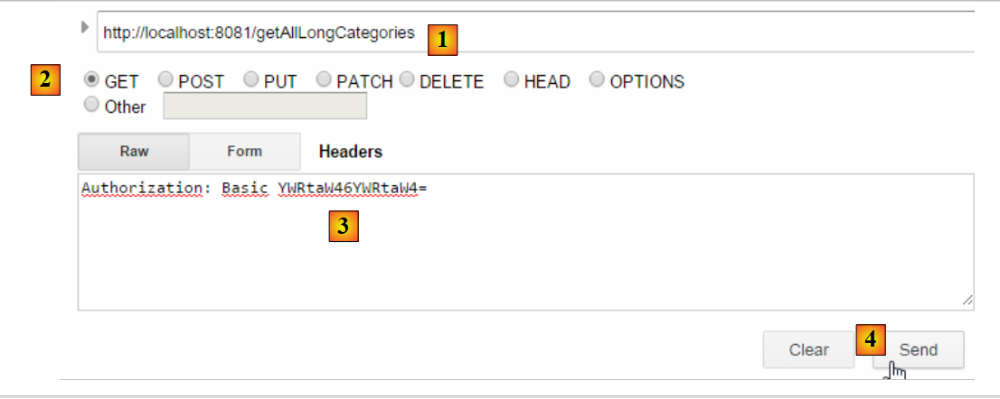 |
- en [1], solicitamos el URL de las categorías largas;
- en [2], con un método GET;
- en [3], proporcionamos el encabezado HTTP de la autenticación. El código [YWRtaW46YWRtaW4=] es la codificación Base64 de la cadena [admin:admin];
- en [4], enviamos el comando HTTP;
La respuesta del servidor es la siguiente:
 |
- en [1], el encabezado de autenticación HTTP;
- en [2], el servidor devuelve una respuesta jSON;
Se obtiene correctamente la lista de categorías:
 |
Intentemos ahora una solicitud HTTP con un encabezado de autenticación incorrecto. La respuesta es entonces la siguiente:
 |
- en [1]: el encabezado de autenticación HTTP;
Obtenemos la siguiente respuesta:
 |
- en [2]: la respuesta del servicio web;
Ahora probemos con el usuario user / user. Existe, pero no tiene acceso al servicio web. Si ejecutamos el programa de codificación Base64 con los dos argumentos [user user]:
 |
obtenemos el siguiente resultado:
 |
- en [1]: el encabezado de autenticación erróneo HTTP;
 |
- en [2]: la respuesta del servicio web. Es diferente de la anterior, que era [401 Unauthorized]. En esta ocasión, el usuario se ha autenticado correctamente, pero no tiene los permisos suficientes para acceder a URL;
Ahora hay un servicio web seguro en funcionamiento.
20.2.6. Un URL de autenticación
 |
Vamos a crear un URL que nos permitirá saber si un usuario está autorizado o no para acceder al servicio web. Para ello, creamos el nuevo controlador MVC [AuthenticateController] siguiente:
package spring.security.service;
import org.springframework.web.bind.annotation.RequestMapping;
import org.springframework.web.bind.annotation.RequestMethod;
import org.springframework.web.bind.annotation.RestController;
import spring.webjson.server.service.Response;
@RestController
public class AuthenticateController {
@RequestMapping(value = "/authenticate", method = RequestMethod.GET)
public Response<Void> authenticate() {
return new Response<Void>(0, null, null);
}
}
- línea 9: la clase [AuthenticateController] es un controlador Spring. Como tal, expone URL. La anotación [@RestController] indica que los métodos que procesan estos URL envían ellos mismos su respuesta al cliente;
- línea 11: expone el URL [/authenticate];
- líneas 12-14: el método se limita a devolver un objeto [Response] vacío, pero con un [status] igual a 0, lo que indica que no se ha producido ningún error;
¿Para qué sirve este URL? Cuando queramos simplemente autenticar a un usuario, lo solicitaremos. Hemos visto que si la capa de seguridad no acepta a este usuario, devuelve una excepción. He aquí un ejemplo;
Con el usuario [admin:admin]:
 |  |
Tenemos una respuesta vacía, pero no hay excepción.
Con el usuario [user:user]:
 | 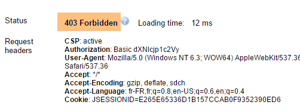 |
Se ha producido una excepción.
20.2.7. Conclusión
La incorporación de las clases necesarias para Spring Security se ha podido realizar sin modificaciones en el proyecto web / json original. Este caso tan favorable se debe a que las tres tablas añadidas a la base de datos son independientes de las tablas existentes. Incluso se podrían haber colocado en una base de datos separada. En otros casos, las tablas añadidas pueden tener relaciones con las tablas existentes. En ese caso, es necesario revisar el código de la capa existente.
20.3. Un cliente programado para el servicio web / jSON seguro
Ya hemos escrito un cliente para el servicio web / jSON no seguro:
 |
Ahora vamos a crear un cliente programado para el servicio web seguro:
 |
 |
20.3.1. La capa [Client HTTP]
 |
 |  |
La clase [Client] garantiza la comunicación HTTP con el servidor web / jSON seguro. Como acabamos de ver, en esta comunicación HTTP, el cliente debe enviar ahora un encabezado de autenticación, por ejemplo:
La interfaz [IClient] queda de la siguiente manera:
package spring.webjson.client.dao;
import org.springframework.http.HttpMethod;
import spring.webjson.client.entities.Credentials;
public interface IClient {
public <T1, T2> T1 getResponse(Credentials credentials,String url, HttpMethod method, int errStatus, T2 body);
}
- línea 8: el primer parámetro del método [getResponse] es ahora un objeto [Credentials] que encapsula los identificadores de un usuario:
package spring.security.client.entities;
public class Credentials {
// propiedades
private String login;
private String password;
// constructor
public Credentials() {
}
public Credentials(String login, String password) {
this.login = login;
this.password = password;
}
// getters y setters
...
}
La clase [Client], que implementa la interfaz [IClient], evoluciona de la siguiente manera:
package spring.security.client.dao;
...
@Component
public class Client implements IClient {
// inyecciones
@Autowired
protected RestTemplate restTemplate;
@Autowired
protected String urlServiceWebJson;
// local
private String simpleClassName = getClass().getSimpleName();
private String getBase64(Credentials credentials) {
// codificamos en base 64 el usuario y su contraseña - requiere Java 8
String chaîne = String.format("%s:%s", credentials.getLogin(), credentials.getPassword());
return String.format("Basic %s", new String(Base64.getEncoder().encode(chaîne.getBytes())));
}
// solicitud genérica
@Override
public <T1, T2> T1 getResponse(Credentials credentials, String url, HttpMethod method, int errStatus, T2 body) {
// la respuesta del servidor
ResponseEntity<Response<T1>> response;
try {
// se prepara la solicitud
RequestEntity<?> request = null;
if (method == HttpMethod.GET) {
HeadersBuilder<?> headersBuilder = RequestEntity.get(new URI(String.format("%s%s", urlServiceWebJson, url))) .accept(MediaType.APPLICATION_JSON);
if (credentials != null) {
headersBuilder = headersBuilder.header("Authorization", getBase64(credentials));
}
request = headersBuilder.build();
}
if (method == HttpMethod.POST) {
BodyBuilder bodyBuilder = RequestEntity.post(new URI(String.format("%s%s", urlServiceWebJson, url))).header("Content-Type", "application/json").accept(MediaType.APPLICATION_JSON);
if (credentials != null) {
bodyBuilder = bodyBuilder.header("Authorization", getBase64(credentials));
}
request = bodyBuilder.body(body);
}
// se ejecuta la solicitud
response = restTemplate.exchange(request, new ParameterizedTypeReference<Response<T1>>() {
});
} catch (Exception e) {
// encapsulando la excepción
throw new DaoException(errStatus, e, simpleClassName);
}
...
}
...
}
- líneas 33-35, 40-42: si el usuario [credentials] no es nulo, se añade el encabezado de autenticación. La codificación Base64 del usuario y su contraseña se realiza mediante el método [getBase64] de las líneas 17-21. Hay que tener en cuenta que este método utiliza una clase [Base64] perteneciente a JDK 1.8. Nuestro cliente HTTP puede funcionar con un servicio web no seguro. Basta con pasarle un [credentials] igual a null;
- Aparte de las líneas anteriores, el código permanece sin cambios;
20.3.2. La capa [DAO]
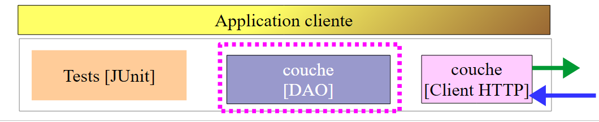 |
20.3.2.1. La interfaz [IDao]
 |
Todos los métodos de la interfaz [IDao] del proyecto [spring-webjson-client-generic] reciben un parámetro adicional [Credentials credentials]:
package spring.security.client.dao;
import java.util.List;
import spring.security.client.entities.AbstractCoreEntity;
import spring.security.client.entities.Credentials;
public interface IDao<T extends AbstractCoreEntity> extends IAuthenticate {
// lista de todas las entidades T
public List<T> getAllShortEntities(Credentials credentials);
public List<T> getAllLongEntities(Credentials credentials);
// de entidades específicas - version breve
public List<T> getShortEntitiesById(Credentials credentials, Iterable<Long> ids);
public List<T> getShortEntitiesById(Credentials credentials, Long... ids);
public List<T> getShortEntitiesByName(Credentials credentials, Iterable<String> names);
public List<T> getShortEntitiesByName(Credentials credentials, String... names);
// de entidades específicas - version larga
public List<T> getLongEntitiesById(Credentials credentials, Iterable<Long> ids);
public List<T> getLongEntitiesById(Credentials credentials, Long... ids);
public List<T> getLongEntitiesByName(Credentials credentials, Iterable<String> names);
public List<T> getLongEntitiesByName(Credentials credentials, String... names);
// actualización de varias entidades
public List<T> saveEntities(Credentials credentials, Iterable<T> entities);
public List<T> saveEntities(Credentials credentials, @SuppressWarnings("unchecked") T... entities);
// eliminación de todas las entidades
public void deleteAllEntities(Credentials credentials);
// eliminación de varias entidades
public void deleteEntitiesById(Credentials credentials, Iterable<Long> ids);
public void deleteEntitiesById(Credentials credentials, Long... ids);
public void deleteEntitiesByName(Credentials credentials, Iterable<String> names);
public void deleteEntitiesByName(Credentials credentials, String... names);
public void deleteEntitiesByEntity(Credentials credentials, Iterable<T> entities);
public void deleteEntitiesByEntity(Credentials credentials, @SuppressWarnings("unchecked") T... entities);
}
- línea 8: la interfaz [IDao] amplía la siguiente interfaz [IAuthenticate]:
package spring.security.client.dao;
import spring.security.client.entities.Credentials;
public interface IAuthenticate {
// autenticación
public void authenticate(Credentials credentials);
}
La interfaz [IAuthenticate] solo tiene el método [authenticate]. Este no devuelve nada (void) si el usuario [Credentials credentials] es aceptado por el servicio web seguro; de lo contrario, devuelve una excepción.
20.3.2.2. La clase [AbstractDao]
 |
Recordemos que la clase [AbstractDao] es la clase padre de las clases [DaoCategorie], que gestionan los URL de las categorías, y [DaoProduit], que gestiona los URL de los productos. Todos los métodos de la clase [AbstractDao] del proyecto [spring-webjson-client-generic] reciben un parámetro adicional [Credentials credentials] que pasan a la clase hija. He aquí un ejemplo:
@Override
public List<T1> getShortEntitiesById(Credentials credentials, Iterable<Long> ids) {
// validez del argumento
List<T1> entities = checkNullOrEmptyArgument(true, ids);
if (entities != null) {
return entities;
}
// resultado
return getShortEntitiesById(credentials, Lists.newArrayList(ids));
}
- el método [getShortEntitiesById] recibe el parámetro [Credentials credentials] (línea 2) que transmite (línea 9) al método [getShortEntitiesById] de la clase hija;
La clase [AbstractDao] tiene la siguiente estructura:
package spring.security.client.dao;
import java.util.ArrayList;
import java.util.List;
import org.springframework.beans.factory.annotation.Autowired;
import spring.security.client.entities.AbstractCoreEntity;
import spring.security.client.entities.Credentials;
import spring.security.client.infrastructure.MyIllegalArgumentException;
import com.google.common.collect.Lists;
public abstract class AbstractDao<T1 extends AbstractCoreEntity> implements IDao<T1> {
@Autowired
private IAuthenticate authenticate;
...
}
- línea 14: la clase implementa la interfaz [IDao] que hemos descrito;
- líneas 16-17: se inyecta una instancia de la interfaz [IAuthenticate]. Esta es implementada por la siguiente clase [Authenticate]:
package spring.security.client.dao;
import org.springframework.beans.factory.annotation.Autowired;
import org.springframework.http.HttpMethod;
import org.springframework.stereotype.Component;
import spring.security.client.entities.Credentials;
@Component
public class Authenticate implements IAuthenticate{
@Autowired
protected IClient client;
// verificación [credentials,mdp]
public void authenticate(Credentials credentials) {
client.<Void, Void> getResponse(credentials, "/authenticate", HttpMethod.GET, 111, (Void) null);
}
}
- línea 9: la clase [Authenticate] es un componente Spring;
- línea 10: que implementa la interfaz [IAuthenticate];
- líneas 11-12: inyección del cliente HTTP que permite comunicarse con el servicio web seguro;
- líneas 15-17: implementación del método [authenticate] de la interfaz;
- línea 16: se envía un comando HTTP GET al URL [/authenticate]. El uso de este URL se ha mostrado en el apartado 20.2.6. Su principio es que la llamada termina con una excepción si el usuario [credentials] es desconocido o no tiene los derechos suficientes;
La clase [AbstractDao] implementa el método [authenticate] de la interfaz [IDao] de la siguiente manera:
@Autowired
private IAuthenticate authenticate;
@Override
public void authenticate(Credentials credentials) {
authenticate.authenticate(credentials);
}
- línea 7: la tarea se delega al método [authenticate] de la clase [Authenticate]. Por lo tanto, se producirá una excepción si el usuario [Credentials credentials] no es aceptado por el servicio web seguro;
20.3.2.3. Las clases [DaoCategorie, DaoProduit]
 |
Las clases [DaoCategorie, DaoProduit] son las del proyecto [spring-webjson-server-generic] con el parámetro adicional [Credentials credentials]. He aquí un ejemplo:
@Component
public class DaoCategorie extends AbstractDao<Categorie> {
// inyecciones
@Autowired
protected ApplicationContext context;
@Autowired
protected IClient client;
@Override
public List<Categorie> getAllShortEntities(Credentials credentials) {
try {
// filtros jSON
ObjectMapper mapper = context.getBean("jsonMapperShortCategorie", ObjectMapper.class);
// obtener todas las categorías
Object map = client.<List<Categorie>, Void> getResponse(credentials, "/getAllShortCategories", HttpMethod.GET,
202, null);
// la lista de categorías List<Categoría>
return mapper.readValue(mapper.writeValueAsString(map), new TypeReference<List<Categorie>>() {
});
} catch (DaoException e1) {
throw e1;
} catch (Exception e2) {
throw new DaoException(221, e2, simpleClassName);
}
}
....
20.3.3. La configuración de Spring
 |
La clase [AppConfig] configura el entorno Spring del proyecto. Es idéntica a la del proyecto [spring-webjson-client-generic], salvo por un detalle:
@Configuration
@ComponentScan({ "spring.security.client.dao" })
public class AppConfig {
- línea 2: hay que introducir el paquete de la nueva capa [DAO];
20.3.4. Pruebas de la capa [DAO]
 |
 |
20.3.4.1. La prueba [JUnitTestCredentials]
La prueba [JUnitTestCredentials] utiliza el método [IDao.authenticate] para verificar la validez de determinados usuarios:
package client.tests.junit;
import org.junit.Assert;
import org.junit.BeforeClass;
import org.junit.Test;
import org.junit.runner.RunWith;
import org.springframework.beans.factory.annotation.Autowired;
import org.springframework.boot.test.SpringApplicationConfiguration;
import org.springframework.test.context.junit4.SpringJUnit4ClassRunner;
import spring.security.client.config.AppConfig;
import spring.security.client.dao.IAuthenticate;
import spring.security.client.entities.Credentials;
import spring.security.client.infrastructure.DaoException;
@SpringApplicationConfiguration(classes = AppConfig.class)
@RunWith(SpringJUnit4ClassRunner.class)
public class JUnitTestCredentials {
// capa [DAO]
@Autowired
private IAuthenticate authenticate;
// usuarios
static private Credentials admin;
static private Credentials user;
static private Credentials unknown;
@BeforeClass
public static void init() {
admin = new Credentials("admin", "admin");
user = new Credentials("user", "user");
unknown = new Credentials("x", "y");
}
@Test()
public void checkUserUser() {
DaoException se = null;
try {
authenticate.authenticate(user);
} catch (DaoException e) {
se = e;
System.out.println("checkUserUser: " + e);
}
Assert.assertNotNull(se);
Assert.assertEquals("403 Forbidden", se.getExceptions().get(0).getErrorMessage());
}
@Test()
public void checkUserUnknown() {
DaoException se = null;
try {
authenticate.authenticate(unknown);
} catch (DaoException e) {
se = e;
System.out.println("checkUserUnknown : " + e);
}
Assert.assertNotNull(se);
Assert.assertEquals("401 Unauthorized", se.getExceptions().get(0).getErrorMessage());
}
@Test()
public void checkUserAdmin() {
DaoException se = null;
try {
authenticate.authenticate(admin);
} catch (DaoException e) {
se = e;
System.out.println("checkUserAdmin : " + e);
}
Assert.assertNull(se);
}
}
- Durante la inicialización de la clase de prueba, en las líneas 29-34, se crean tres usuarios:
- el usuario [admin] tiene acceso a los URL del servicio web. Se comprueba en las líneas 63-72;
- el usuario [user] existe, pero no está autorizado a utilizar los URL del servicio web. Se comprueba en las líneas 37-47;
- el usuario [unknown] no existe. Se comprueba en las líneas 50-60;
Se inicia el servicio web seguro con la configuración de ejecución denominada [spring-security-server-jdbc-generic] [1]:
 |
A continuación, se inicia la prueba JUnit [JUnitTestCredentials] con la configuración de ejecución [spring-security-client-generic-JUnitTestCredentials] [2]. Los resultados de la consola obtenidos son los siguientes:
y la prueba se supera:
 |
20.3.4.2. La prueba [JUnitTestDao]
La prueba [JUnitTestDao] es idéntica a la del proyecto no seguro [spring-webjson-client-generic], salvoque ahora los métodos de la capa [DAO] probados tienen todos como primer parámetro el usuario [admin / admin]:
@SpringApplicationConfiguration(classes = AppConfig.class)
@RunWith(SpringJUnit4ClassRunner.class)
public class JUnitTestDao {
// contexto Spring
@Autowired
private ApplicationContext context;
// capa [DAO]
@Autowired
private IDao<Produit> daoProduit;
@Autowired
private IDao<Categorie> daoCategorie;
....
// usuarios
static private Credentials admin;
@BeforeClass
public static void init() {
admin = new Credentials("admin", "admin");
}
@Before
public void clean() {
// se limpia la base de datos antes de cada prueba
log("Vidage de la base de données", 1);
// se vacía la tabla [CATEGORIES] y, en cadena, la tabla [PRODUITS]
daoCategorie.deleteAllEntities(admin);
// se vacían los diccionarios
for (Long id : mapCategories.keySet()) {
mapCategories.remove(id);
}
for (Long id : mapProduits.keySet()) {
mapProduits.remove(id);
}
}
private List<Categorie> fill(int nbCategories, int nbProduits) {
// se rellenan las tablas
...
// se añade la categoría; de forma cascada, los productos también se
// insertados; se devuelve el resultado al mismo tiempo
return daoCategorie.saveEntities(admin, categories);
}
private Object[] showDataBase() throws BeansException, JsonProcessingException {
// lista de categorías
log("Liste des catégories", 2);
List<Categorie> categories = daoCategorie.getAllShortEntities(admin);
affiche(categories, context.getBean("jsonMapperShortCategorie", ObjectMapper.class));
// lista de productos
log("Liste des produits", 2);
List<Produit> produits = daoProduit.getAllShortEntities(admin);
affiche(produits, context.getBean("jsonMapperShortProduit", ObjectMapper.class));
// resultado
return new Object[] { categories, produits };
}
...
Todas las operaciones se realizan con el usuario [admin / admin], que es el único con derecho de acceso al servicio web seguro.
Se iniciará la prueba con la configuración de ejecución denominada [spring-security-client-generic-JUnitTestDao]:
 |
La prueba se supera, pero se observa que es más lenta que con el servicio web no seguro. La securización de una aplicación aumenta notablemente sus tiempos de respuesta. Cabe destacar un factor importante en el rendimiento del servicio web seguro: en la clase [AppConfig] que lo configura, hemos escrito:
@Override
protected void configure(HttpSecurity http) throws Exception {
// CSRF
http.csrf().disable();
// ¿Aplicación segura?
if (activateSecurity) {
// la contraseña se transmite a través del encabezado Authorization: Basic xxxx
http.httpBasic();
// el método HTTP OPTIONS debe estar autorizado para todos
http.authorizeRequests() //
.antMatchers(HttpMethod.OPTIONS, "/", "/**").permitAll();
// solo el rol ADMIN puede utilizar la aplicación
http.authorizeRequests() //
.antMatchers("/", "/**") // todos los URL
.hasRole("ADMIN");
// sin sesión
http.sessionManagement().sessionCreationPolicy(SessionCreationPolicy.STATELESS);
}
}
La línea 17 tiene un coste. Obliga o no al usuario a autenticarse en cada acceso. Si la ponemos entre comentarios, la duración de la prueba JUnit es notablemente menor, ya que el usuario [admin] solo se autentica para la primera prueba y no para las siguientes (aunque el cliente envíe el encabezado de autenticación HTTP, el servidor no vuelve a verificar la contraseña del usuario).
20.4. El proyecto Eclipse [spring-security-server-jpa-generic]
El servicio web seguro se implementará ahora mediante el proyecto [spring-security-server-jpa-generic], que se basa en el proyecto [spring-jpa-generic], el cual gestiona el acceso a la base de datos con Spring Data JPA:
 |
Arriba:
- la capa [DAO1] es la capa [DAO], que gestiona las tablas [PRODUITS] y [CATEGORIES] de la base [dbproduitscategories]. Ya se ha escrito;
- la capa [DAO2] es la capa [DAO] que gestiona las tablas [USERS], [ROLES] y [USERS_ROLES] de la base [dbproduitscategories]. Queda por escribir;
El proyecto [spring-security-server-jpa-generic] se obtiene en primer lugar copiando el proyecto estudiado anteriormente, [spring-security-server-jdbc-generic]. De hecho, las capas [web] y [security] no cambian porque:
- la capa [DAO1 / Repositories / JPA] (ya escrita) tiene la misma interfaz que la capa [DAO1 / JDBC];
- la capa [DAO2 / Repositories / JPA] (por escribir) tendrá la misma interfaz que la capa [DAO2 / JDBC];
El proyecto [spring-security-server-jpa-generic] es el siguiente:
 |
- el paquete [spring.security.repositories] implementa la capa [repositories];
- el paquete [spring.security.dao] implementa la capa [dao2];
20.4.1. El proyecto Maven
El proyecto es un proyecto Maven configurado por el siguiente archivo [pom.xml]:
<project xmlns="http://maven.apache.org/POM/4.0.0" xmlns:xsi="http://www.w3.org/2001/XMLSchema-instance"
xsi:schemaLocation="http://maven.apache.org/POM/4.0.0 http://maven.apache.org/xsd/maven-4.0.0.xsd">
<modelVersion>4.0.0</modelVersion>
<groupId>dvp.spring.database</groupId>
<artifactId>spring-security-server-jpa-generic</artifactId>
<version>0.0.1-SNAPSHOT</version>
<name>spring-security-server-jpa-generic</name>
<description>démo spring security</description>
<properties>
<project.build.sourceEncoding>UTF-8</project.build.sourceEncoding>
<java.version>1.7</java.version>
</properties>
<parent>
<groupId>org.springframework.boot</groupId>
<artifactId>spring-boot-starter-parent</artifactId>
<version>1.2.3.RELEASE</version>
</parent>
<dependencies>
<!-- Spring Security -->
<dependency>
<groupId>org.springframework.boot</groupId>
<artifactId>spring-boot-starter-security</artifactId>
</dependency>
<!-- servidor web / jSON -->
<dependency>
<groupId>dvp.spring.database</groupId>
<artifactId>spring-webjson-server-jpa-generic</artifactId>
<version>0.0.1-SNAPSHOT</version>
</dependency>
</dependencies>
<!-- complementos -->
<build>
<plugins>
<plugin>
<groupId>org.apache.maven.plugins</groupId>
<artifactId>maven-surefire-plugin</artifactId>
<version>2.18.1</version>
</plugin>
</plugins>
</build>
</project>
- líneas 24-27: la dependencia de la capa [security] del proyecto;
- líneas 29-33: la dependencia para la capa [web] del proyecto. El proyecto [spring-webjson-server-jpa-generic] implementa por completo la capa [web]. Esta no necesita ser escrita ni modificada;
En definitiva, las dependencias son las siguientes:
 |
20.4.2. La configuración de Spring
 |
El archivo de configuración [AppConfig] del proyecto anterior [spring-security-server-jdbc-generic] es válido. Solo hay que añadirle una configuración adicional:
@Configuration
@EnableWebSecurity
@EnableJpaRepositories(basePackages = { "spring.security.repositories" })
@ComponentScan(basePackages = { "spring.security.dao", "spring.security.service" })
@Import({ spring.webjson.server.config.AppConfig.class })
public class AppConfig extends WebSecurityConfigurerAdapter {
- línea 3: se declara el paquete que implementa la capa [repositories];
- línea 4: los paquetes que contienen los beans de Spring tienen el mismo nombre en el nuevo proyecto;
- línea 5: en el proyecto anterior, la clase [spring.webjson.server.config.AppConfig] se encontraba en la dependencia [spring-webjson-server-jdbc-generic]. Aquí se encontrará en la dependencia [spring-webjson-server-jpa-generic];
20.4.3. La capa JPA
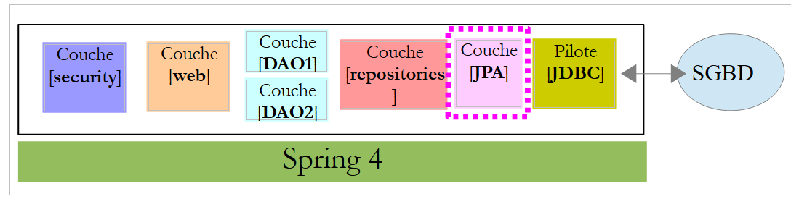 |
Las entidades JPA gestionadas por la capa [JPA] se encuentran en el proyecto [mysql-config-jpa-hibernate] [2], que es una dependencia del proyecto [1]:
 |
La clase [User] es la imagen de la tabla [USERS]:

- ID: clave primaria;
- VERSION: columna de control de versiones de la fila;
- IDENTITY: una identidad descriptiva del usuario;
- LOGIN: el nombre de usuario;
- PASSWORD: su contraseña;
package generic.jpa.entities.dbproduitscategories;
import generic.jdbc.config.ConfigJdbc;
import java.util.List;
import javax.persistence.CascadeType;
import javax.persistence.Column;
import javax.persistence.Entity;
import javax.persistence.FetchType;
import javax.persistence.GeneratedValue;
import javax.persistence.GenerationType;
import javax.persistence.Id;
import javax.persistence.OneToMany;
import javax.persistence.Table;
import javax.persistence.Transient;
import javax.persistence.Version;
import com.fasterxml.jackson.annotation.JsonIgnore;
@Entity
@Table(name = ConfigJdbc.TAB_USERS)
public class User implements AbstractCoreEntity {
// propiedades
@Id
@GeneratedValue(strategy = GenerationType.IDENTITY)
@Column(name = ConfigJdbc.TAB_JPA_ID)
protected Long id;
@Version
@Column(name = ConfigJdbc.TAB_JPA_VERSIONING)
protected Long version;
@Transient
protected EntityType entityType=EntityType.POJO;
// propiedades
@Column(name = ConfigJdbc.TAB_USERS_NAME, length = 30, nullable = false)
private String name;
@Column(name = ConfigJdbc.TAB_USERS_LOGIN, length = 30, unique = true, nullable = false)
private String login;
@Column(name = ConfigJdbc.TAB_USERS_PASSWORD, length = 60, nullable = false)
private String password;
// los UserRole asociados
@OneToMany(fetch = FetchType.LAZY, mappedBy = "user", cascade = { CascadeType.ALL })
@JsonIgnore
private List<UserRole> userRoles;
// constructores
public User() {
}
public User(Long id, Long version, String identity, String login, String password) {
this.id = id;
this.version = version;
this.name = identity;
this.login = login;
this.password = password;
}
// ------------------------------------------------------------
// redefinición de [equals] y [hashcode]
...
// getters y setters
...
}
- línea 23: la clase implementa la interfaz [AbstractCoreEntity] ya utilizada para las demás entidades;
- líneas 34-35: el tipo de la entidad. Esta propiedad no se guarda en la base de datos [@Transient];
- líneas 38-43: las tres propiedades básicas de un usuario (name, login, password);
- líneas 46-48: la lista de roles del usuario. Puede tener varios. Del mismo modo, veremos que a un rol pueden estar asociados varios usuarios. Por lo tanto, en el sentido del término, tenemos una relación entre las entidades:
- un usuario puede estar vinculado a varios roles;
- un rol puede hacer referencia a varios usuarios;
Esta relación [ManyToMany] se implementa en la base de datos mediante la tabla de unión [USERS_ROLES]. Si un usuario U tiene una relación con un rol R, se introduce esta relación en la tabla [USERS_ROLES] registrando el par de claves primarias de las entidades (U,R). Por su parte, en JPA, la relación [ManyToMany] que vincula las entidades [User] y [Role] puede dividirse en dos relaciones [ManyToOne, OneToMany]:
- (continuación)
- una relación [ManyToOne] de la entidad [User] a la entidad [UserRole];
- una relación [OneToMany] de la entidad [UserRole] a la entidad [UserRole];
Del mismo modo, la relación [ManyToMany] que vincula las entidades [Role] y [User] puede dividirse en dos relaciones [ManyToOne, OneToMany]:
- (continuación)
- una relación [ManyToOne] de la entidad [Role] a la entidad [UserRole];
- una relación [OneToMany] de la entidad [UserRole] a la entidad [User];
- ligación 48: el hecho de que un usuario tenga varios roles se traduce en una relación [OneToMany] hacia la entidad [UserRole];
La clase [Role] es la imagen de la tabla [ROLES]:
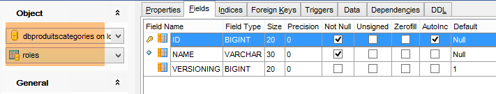
- ID: clave primaria;
- VERSION: columna de control de versiones de la fila;
- NAME: nombre del rol. Por defecto, Spring Security espera nombres con el formato ROLE_XX, por ejemplo, ROLE_ADMIN o ROLE_GUEST;
package generic.jpa.entities.dbproduitscategories;
import generic.jdbc.config.ConfigJdbc;
import java.util.List;
import javax.persistence.CascadeType;
import javax.persistence.Column;
import javax.persistence.Entity;
import javax.persistence.FetchType;
import javax.persistence.GeneratedValue;
import javax.persistence.GenerationType;
import javax.persistence.Id;
import javax.persistence.OneToMany;
import javax.persistence.Table;
import javax.persistence.Transient;
import javax.persistence.Version;
import com.fasterxml.jackson.annotation.JsonIgnore;
@Entity
@Table(name = ConfigJdbc.TAB_ROLES)
public class Role implements AbstractCoreEntity {
// propiedades
@Id
@GeneratedValue(strategy = GenerationType.IDENTITY)
@Column(name = ConfigJdbc.TAB_JPA_ID)
protected Long id;
@Version
@Column(name = ConfigJdbc.TAB_JPA_VERSIONING)
protected Long version;
@Transient
protected EntityType entityType=EntityType.POJO;
// propiedades
@Column(name = ConfigJdbc.TAB_ROLES_NAME, length = 30, unique = true, nullable = false)
private String name;
// los UserRole asociados
@OneToMany(fetch = FetchType.LAZY, mappedBy = "role", cascade = { CascadeType.ALL })
@JsonIgnore
private List<UserRole> userRoles;
// constructores
public Role() {
}
public Role(Long id, Long version, String name) {
this.id = id;
this.version = version;
this.name = name;
}
// getters y setters
public Role(String name) {
this.name = name;
}
// ------------------------------------------------------------
// redefinición de [equals] y [hashcode]
...
// getters y setters
...
}
- líneas 42-44: el hecho de que a un rol puedan estar asociados varios usuarios se traduce en una relación [@OneToMany] hacia la entidad [UserRole];
La clase [UserRole] es la imagen de la tabla [USERS_ROLES]:

Un usuario puede tener varios roles, y un rol puede agrupar a varios usuarios. Se trata de una relación muchos a muchos que se materializa en la tabla [USERS_ROLES].
- ID: clave primaria;
- VERSION: columna de control de versiones de la fila;
- USER_ID: identificador de un usuario;
- ROLE_ID: identificador de un rol;
package generic.jpa.entities.dbproduitscategories;
import generic.jdbc.config.ConfigJdbc;
import javax.persistence.Column;
import javax.persistence.Entity;
import javax.persistence.FetchType;
import javax.persistence.GeneratedValue;
import javax.persistence.GenerationType;
import javax.persistence.Id;
import javax.persistence.JoinColumn;
import javax.persistence.ManyToOne;
import javax.persistence.Table;
import javax.persistence.Transient;
import javax.persistence.Version;
@Entity
@Table(name = ConfigJdbc.TAB_USERS_ROLES)
public class UserRole implements AbstractCoreEntity {
// propiedades
@Id
@GeneratedValue(strategy = GenerationType.IDENTITY)
@Column(name = ConfigJdbc.TAB_JPA_ID)
protected Long id;
@Version
@Column(name = ConfigJdbc.TAB_JPA_VERSIONING)
protected Long version;
@Transient
protected EntityType entityType=EntityType.POJO;
// un UserRole hace referencia a un usuario
@ManyToOne(fetch = FetchType.LAZY)
@JoinColumn(name = ConfigJdbc.TAB_USERS_ROLES_USER_ID, nullable = false)
private User user;
// un UserRole hace referencia a un Role
@ManyToOne(fetch = FetchType.LAZY)
@JoinColumn(name = ConfigJdbc.TAB_USERS_ROLES_ROLE_ID, nullable = false)
private Role role;
// constructores
public UserRole() {
}
public UserRole(User user, Role role) {
this.user = user;
this.role = role;
}
// ------------------------------------------------------------
// redefinición de [equals] y [hashcode]
...
// getters y setters
...
}
- líneas 34-36: representan la clave externa de la tabla [USERS_ROLES] hacia la tabla [USERS];
- líneas 38-41: representan la clave externa de la tabla [USERS_ROLES] hacia la tabla [ROLES];
20.4.4. La capa [repositories]
 |
 |
La interfaz [UserRepository] gestiona el acceso a las entidades [User]:
package spring.security.repositories;
import generic.jpa.entities.dbproduitscategories.Role;
import generic.jpa.entities.dbproduitscategories.User;
import org.springframework.data.jpa.repository.Query;
import org.springframework.data.repository.CrudRepository;
public interface UserRepository extends CrudRepository<User, Long> {
// liste des rôles d'un utilisateur identifié par son id
@Query("select ur.role from UserRole ur where ur.user.id=?1")
Iterable<Role> getRoles(long id);
// liste des rôles d'un utilisateur identifié par son login unique
@Query("select ur.role from UserRole ur where ur.user.login=?1 and ur.user.password=?2")
Iterable<Role> getRoles(String login, String password);
// recherche d'un utilisateur via son login
User findUserByLogin(String login);
}
- línea 9: la interfaz [UserRepository] amplía la interfaz [CrudRepository] de Spring Data (línea 7);
- líneas 12-13: el método [getRoles(long id)] permite obtener todos los roles de un usuario identificado por su [id]
- líneas 16-17: lo mismo, pero para un usuario identificado por su nombre de usuario y contraseña;
- línea 20: para buscar un usuario mediante su nombre de usuario;
La interfaz [RoleRepository] gestiona los accesos a las entidades [Role]:
package spring.security.repositories;
import generic.jpa.entities.dbproduitscategories.Role;
import org.springframework.data.repository.CrudRepository;
public interface RoleRepository extends CrudRepository<Role, Long> {
// búsqueda de un rol por su nombre
Role findRoleByName(String name);
}
- línea 7: la interfaz [RoleRepository] amplía la interfaz [CrudRepository];
- línea 10: se puede buscar un rol por su nombre. Recordemos aquí que la entidad [Role] tiene un campo [name]. El método [findEntityByChamp] es implementado automáticamente por Spring Data. Por lo tanto, no es necesario implementar aquí el método [finRoleByName]. Solo hay que declararlo en la interfaz.
La interfaz [UserRoleRepository] gestiona el acceso a las entidades [UserRole]:
package spring.security.repositories;
import generic.jpa.entities.dbproduitscategories.UserRole;
import org.springframework.data.repository.CrudRepository;
public interface UserRoleRepository extends CrudRepository<UserRole, Long> {
}
- línea 7: la interfaz [UserRoleRepository] se limita a extender la interfaz [CrudRepository] sin añadirle nuevos métodos;
20.4.5. La capa [DAO2]
 |
 |
En la capa [DAO2], encontramos las mismas clases que en la capa [DAO2] del proyecto [spring-security-server-jdbc-generic] estudiado anteriormente en el apartado 20.2.2. Ahora solo hay que implementarlas con la ayuda de las clases de la capa [repositories].
La clase [AppUserDetails] evoluciona de la siguiente manera:
package spring.security.dao;
import generic.jpa.entities.dbproduitscategories.Role;
import generic.jpa.entities.dbproduitscategories.User;
import java.util.ArrayList;
import java.util.Collection;
import org.springframework.security.core.GrantedAuthority;
import org.springframework.security.core.authority.SimpleGrantedAuthority;
import org.springframework.security.core.userdetails.UserDetails;
import spring.data.infrastructure.DaoException;
import spring.security.repositories.UserRepository;
public class AppUserDetails implements UserDetails {
private static final long serialVersionUID = 1L;
// propiedades
private User user;
private UserRepository userRepository;
// local
private String simpleClassName = getClass().getSimpleName();
// constructores
public AppUserDetails() {
}
public AppUserDetails(User user, UserRepository userRepository) {
this.user = user;
this.userRepository = userRepository;
}
// -------------------------interfaz
@Override
public Collection<? extends GrantedAuthority> getAuthorities() {
Collection<GrantedAuthority> authorities = new ArrayList<>();
Iterable<Role> roles;
try {
roles = userRepository.getRoles(user.getId());
} catch (Exception e) {
e.printStackTrace();
throw new DaoException(167, e, simpleClassName);
}
for (Role role : roles) {
authorities.add(new SimpleGrantedAuthority(role.getName()));
}
return authorities;
}
...
}
- línea 31, el constructor de la clase recibe como segundo parámetro el objeto [UserRepository], lo que permite a la clase obtener los roles de un usuario determinado (línea 42);
El componente Spring [AppUserDetailsService] evoluciona de la siguiente manera:
package spring.security.dao;
import generic.jpa.entities.dbproduitscategories.User;
import org.springframework.beans.factory.annotation.Autowired;
import org.springframework.security.core.userdetails.UserDetails;
import org.springframework.security.core.userdetails.UserDetailsService;
import org.springframework.security.core.userdetails.UsernameNotFoundException;
import org.springframework.stereotype.Service;
import spring.data.infrastructure.DaoException;
import spring.security.repositories.UserRepository;
@Service
public class AppUserDetailsService implements UserDetailsService {
@Autowired
private UserRepository userRepository;
// local
private String simpleClassName = getClass().getName();
@Override
public UserDetails loadUserByUsername(String login) throws UsernameNotFoundException {
// ¿Se busca al usuario por su nombre de usuario?
User user;
try {
user = userRepository.findUserByLogin(login);
} catch (Exception e) {
throw new DaoException(168, e, simpleClassName);
}
// ¿Encontrado?
if (user == null) {
throw new UsernameNotFoundException(String.format("login [%s] inexistant", login));
}
// se muestran los datos del usuario
return new AppUserDetails(user, userRepository);
}
}
- línea 18: inyección del componente Spring [userRepository], que permitirá al servicio identificar al usuario por su nombre de usuario, línea 27;
Al final, nos damos cuenta de que solo necesitamos el [userRepository] y no los otros dos repositorios [roleRepository, userRoleRepository]. Estos se utilizarán en el siguiente proyecto, cuyo objetivo es rellenar las tablas [USERS, ROLES, USERS_ROLES].
20.4.6. Las pruebas
El servicio web seguro se inicia con la configuración denominada [spring-security-server-jpa-generic-hibernate-eclipselink] [1]. La prueba [JUnitTestDao] del cliente genérico se inicia con la configuración denominada [spring-security-client-generic-JUnitTestDao] [2]:
 |
Las pruebas se superan.
20.5. El proyecto Eclipse [spring-security-create-users]
 |
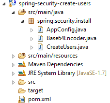 |
20.5.1. La base de datos
La ejecución del proyecto rellena las tablas [USERS, ROLES, USERS_ROLES] de la tabla [dbproduitscategories]:

|
|
Los identificadores creados [login/passwd] son los siguientes: [admin/admin], [user/user], [guest/guest]. En la base de datos, las contraseñas están cifradas.
|
20.5.2. Configuración de Maven
El proyecto es un proyecto Maven configurado por el siguiente archivo [pom.xml]:
<?xml version="1.0" encoding="UTF-8"?>
<project xmlns="http://maven.apache.org/POM/4.0.0" xmlns:xsi="http://www.w3.org/2001/XMLSchema-instance"
xsi:schemaLocation="http://maven.apache.org/POM/4.0.0 http://maven.apache.org/xsd/maven-4.0.0.xsd">
<modelVersion>4.0.0</modelVersion>
<groupId>dvp.spring.database</groupId>
<artifactId>spring-security-create-users-jpa</artifactId>
<version>0.0.1-SNAPSHOT</version>
<packaging>jar</packaging>
<name>spring-security-create-users-jpa</name>
<description>création de utilisateurs dans la base [dbproduitscategories]</description>
<parent>
<groupId>org.springframework.boot</groupId>
<artifactId>spring-boot-starter-parent</artifactId>
<version>1.2.3.RELEASE</version>
</parent>
<dependencies>
<!-- Spring Security -->
<dependency>
<groupId>org.springframework.boot</groupId>
<artifactId>spring-boot-starter-security</artifactId>
</dependency>
<!-- spring-security-server-jpa-generic -->
<dependency>
<groupId>dvp.spring.database</groupId>
<artifactId>spring-security-server-jpa-generic</artifactId>
<version>0.0.1-SNAPSHOT</version>
</dependency>
</dependencies>
<properties>
<project.build.sourceEncoding>UTF-8</project.build.sourceEncoding>
<java.version>1.7</java.version>
</properties>
<build>
<plugins>
<plugin>
<groupId>org.apache.maven.plugins</groupId>
<artifactId>maven-surefire-plugin</artifactId>
<version>2.18.1</version>
</plugin>
</plugins>
</build>
</project>
- líneas 22-25: dependencia del framework Spring Security. Este framework proporciona el algoritmo de cifrado de contraseñas
- líneas 27-31: dependencia del proyecto [spring-security-server-jpa-generic] que acabamos de crear. Este proyecto implementa las capas [repositories] y [JPA] del proyecto;
En definitiva, las dependencias son las siguientes:
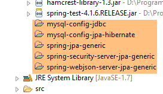 |
20.5.3. La capa [console]
 |
Dado que las capas [repositories] y [JPA] se implementan mediante la dependencia [spring-security-server-jpa-generic], solo queda por implementar la capa [console].
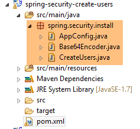 |
- [AppConfig] es la clase de configuración Spring del proyecto;
- [CreateUsers] es la clase ejecutable que crea usuarios y roles;
- [Base64Encoder] es una clase de apoyo para generar el código Base64 de un par [login, password]. Ya la hemos utilizado. No es útil para este proyecto;
La clase de configuración de Spring [AppConfig] es la siguiente:
package spring.security.install;
import generic.jpa.config.ConfigJpa;
import org.springframework.context.annotation.Configuration;
import org.springframework.context.annotation.Import;
import org.springframework.data.jpa.repository.config.EnableJpaRepositories;
@Configuration
@EnableJpaRepositories(basePackages = { "spring.security.repositories" })
@Import({ ConfigJpa.class })
public class AppConfig {
}
- línea 10: se indica dónde encontrar los [repositories] de la aplicación. Se encuentran en el paquete [spring.security.repositories] de la dependencia [spring-security-server-jpa-generic]
- línea 11: se importan los beans de la clase [ConfigJpa] que configura la capa [JPA] del proyecto. Esta clase se encuentra en la dependencia [mysql-config-jpa-hibernate]:
 |
La clase [CreateUsers] es la siguiente:
package spring.security.install;
import generic.jpa.entities.dbproduitscategories.Role;
import generic.jpa.entities.dbproduitscategories.User;
import generic.jpa.entities.dbproduitscategories.UserRole;
import org.springframework.context.annotation.AnnotationConfigApplicationContext;
import org.springframework.security.crypto.bcrypt.BCrypt;
import spring.security.repositories.RoleRepository;
import spring.security.repositories.UserRepository;
import spring.security.repositories.UserRoleRepository;
public class CreateUsers {
public static void main(String[] args) {
// fin
System.out.println("Travail en cours...");
// se crean tres usuarios
String[] logins = { "admin", "user", "guest" };
String[] passwds = { "admin", "user", "guest" };
String[] roles = { "admin", "user", "guest" };
// contexto Spring
AnnotationConfigApplicationContext context = new AnnotationConfigApplicationContext(AppConfig.class);
UserRepository userRepository = context.getBean(UserRepository.class);
RoleRepository roleRepository = context.getBean(RoleRepository.class);
UserRoleRepository userRoleRepository = context.getBean(UserRoleRepository.class);
for (int i = 0; i < logins.length; i++) {
// se recupera la información del usuario n.º i
String login = logins[i];
String password = passwds[i];
String roleName = String.format("ROLE_%s", roles[i].toUpperCase());
// ¿existe ya el rol?
Role role = roleRepository.findRoleByName(roleName);
// si no existe, se crea
if (role == null) {
role = roleRepository.save(new Role(roleName));
}
// ¿Existe ya el usuario?
User user = userRepository.findUserByLogin(login);
// si no existe, se crea
if (user == null) {
// se aplica el hash a la contraseña con bcrypt
String crypt = BCrypt.hashpw(password, BCrypt.gensalt());
// se guarda el usuario
user = userRepository.save(new User(null, null, login, login, crypt));
// se crea la relación con el rol
userRoleRepository.save(new UserRole(user, role));
} else {
// el usuario ya existe: ¿tiene el rol solicitado?
boolean trouvé = false;
for (Role r : userRepository.getRoles(user.getId())) {
if (r.getName().equals(roleName)) {
trouvé = true;
break;
}
}
// si no se encuentra, se crea la relación con el rol
if (!trouvé) {
userRoleRepository.save(new UserRole(user, role));
}
}
}
// cierre del contexto Spring
context.close();
// fin
System.out.println("Travail terminé...");
}
}
- líneas 22-24: definen el nombre de usuario, la contraseña y el rol de tres usuarios;
- línea 27: el contexto Spring se construye a partir de la clase de configuración [AppConfig];
- líneas 28-30: se recuperan las referencias de los tres [Repository] que pueden resultarnos útiles para crear un usuario;
- línea 31: se crean los tres usuarios;
- líneas 33-35: la información para crear el usuario n.º i;
- línea 37: se comprueba si el rol ya existe;
- líneas 39-41: si no es así, lo creamos en la base de datos. Tendrá un nombre del tipo [ROLE_XX];
- línea 43: se comprueba si el nombre de usuario ya existe;
- líneas 45-52: si el nombre de usuario no existe, se crea en la base de datos;
- línea 47: se cifra la contraseña. Aquí se utiliza la clase [BCrypt] de Spring Security (línea 8). Por lo tanto, se necesitan los archivos de este framework. El archivo [pom.xml] incluye esta dependencia:
<dependency>
<groupId>org.springframework.boot</groupId>
<artifactId>spring-boot-starter-security</artifactId>
</dependency>
- línea 49: el usuario se almacena en la base de datos;
- línea 51: así como la relación que lo vincula a su rol;
- líneas 55-60: caso en el que el inicio de sesión ya existe; entonces se comprueba si entre sus roles se encuentra ya el rol que se le quiere asignar;
- líneas 62-64: si no se ha encontrado el rol buscado, se crea una línea en la tabla [USERS_ROLES] para vincular al usuario con su rol;
- no se ha previsto ninguna protección contra posibles excepciones. Se trata de una clase de apoyo para crear usuarios rápidamente;
Para ejecutar el proyecto, se ejecutará la configuración de ejecución denominada [spring-security-create-users-hibernate-eclipselink]:
 |
Acabamos de crear dos servicios web seguros:
- uno con la arquitectura [security / web / JDBC / MySQL];
- el otro con una arquitectura [security / web / Hibernate / MySQL];
Ahora abordamos otras dos arquitecturas:
- una arquitectura [security / web / EclipseLink / SQL Server 2014 Express];
- una arquitectura [security / web / OpenJpa / Oracle Express];
20.5.4. Arquitectura [security / web / EclipseLink / SQL Server]
 |
 |
- en [1], se cargan los proyectos que configuran una capa [JDBC / SQL Server] y una capa [JPA / EclipseLink / SQL Server];
Nota: pulse Alt-F5 y, a continuación, regenere todos los proyectos Maven.
Se supone que el servidor SGBD SQL está en marcha y que se ha generado la base de datos [dbproduitscategories]. En primer lugar, debemos rellenar las tablas [USERS, ROLES, USERS_ROLES] de esta base de datos. Para ello, ejecute la configuración de ejecución denominada [spring-security-create-users-hibernate-eclipselink]:
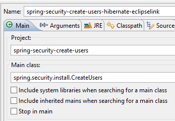 |  |
Esta debe rellenar las tres tablas con datos:
 | 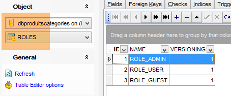 |
 |
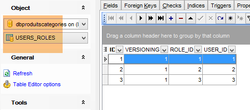 |
- inicie el servicio web seguro con la configuración denominada [spring-security-server-jpa-generic-hibernate-eclipselink][1];
- ejecute la prueba JUnitTestDao con la configuración denominada [spring-security-client-generic-JUnitTestDao][2]. Debe completarse con éxito [3] ;
 |
 |
20.5.5. Arquitectura [security / web / OpenJpa / Oracle Express]
 |
 |
- En [1], se cargan los proyectos que configuran una capa [JDBC / Oracle Express] y una capa [JPA / OpenJpa / Oracle Express];
Nota: pulse Alt-F5 y, a continuación, regenere todos los proyectos Maven.
Se supone que Oracle Express SGBD está en ejecución y que se ha generado la base de datos [dbproduitscategories]. En primer lugar, debemos rellenar las tablas [USERS, ROLES, USERS_ROLES] de esta base de datos. Para ello, ejecute la configuración de ejecución denominada [spring-security-create-users-openjpa]:
 |  |
Esta debe rellenar las tres tablas con datos:
 |  |
 |
 |
- inicie el servicio web seguro con la configuración denominada [spring-security-server-jpa-generic-openjpa][1-2];
- ejecute la prueba JUnitTestDao con la configuración denominada [spring-security-client-generic-JUnitTestDao][3]. Debe completarse con éxito [4] ;
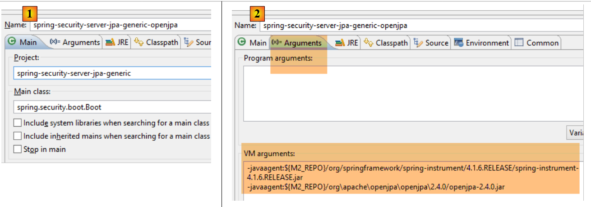 |
 |